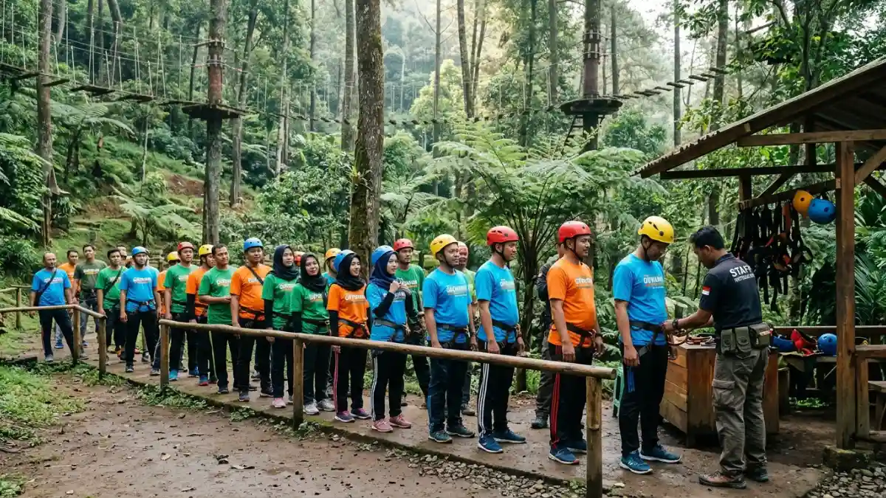
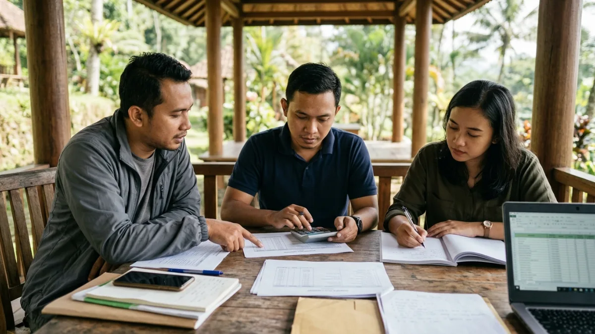

Ilustrasi rincian komponen biaya outbound di Tretes, mulai dari tiket wahana hingga konsumsi dan transportasi rombongan.Harga outbound di Tretes bervariasi menurut paket dan jumlah peserta; tiket Tretes Treetop Adventure Park per Mei 2026 Rp170.000 dewasa dan Rp125.000 anak.
- Tiket Tretes Treetop Adventure Park tercatat Rp170.000 untuk dewasa dan Rp125.000 untuk anak-anak pada pemberitaan Mei 2026.
- Biaya total rombongan mencakup tiket atau paket, konsumsi, transportasi, penginapan, dan dana cadangan.
- Harga paket outbound berbeda antar penyelenggara karena durasi, wahana, dan fasilitas yang termasuk.
- Penawaran tertulis yang rinci mencegah biaya tambahan yang tidak terduga.
- Berapa Harga Tiket Outbound di Tretes Treetop Adventure Park?
- Apa Saja Komponen Biaya dalam Paket Outbound?
- Mengapa Harga Outbound di Tretes Bisa Berbeda Antar Penyelenggara?
- Bagaimana Cara Menghitung Anggaran Outbound untuk Rombongan?
- Bagaimana Cara Menghemat Biaya Outbound di Tretes?
- Apa Kesalahan Anggaran yang Sering Terjadi?
- Kesimpulan
Berapa Harga Tiket Outbound di Tretes Treetop Adventure Park?
Tiket Tretes Treetop Adventure Park per pemberitaan Mei 2026 adalah Rp170.000 untuk dewasa dan Rp125.000 untuk anak-anak, dengan jam buka 08.30 sampai 18.00 WIB.
JawaPos melaporkan tarif tersebut pada Mei 2026 dengan merujuk Traveloka dan GoTravelly. Taman petualangan ini berlokasi di Jalan Raya Trawas, Sumber Wekas, Lumbangrejo, Prigen, dan disebut menyediakan wahana treetop, flying fox, hammock, serta camping ground. Rincian wahana yang termasuk dalam harga tiket perlu dikonfirmasi langsung kepada pengelola.
Biaya kunjungan wisata dapat mengalami perubahan sesuai dengan fluktuasi musim, periode hari libur nasional, atau kebijakan yang ditetapkan oleh pihak pengelola.
Karena itu, anggap angka ini sebagai acuan awal, bukan harga final. Deskripsi komprehensif mengenai seluruh opsi lokasi yang dapat diakses telah disajikan dalam panduan tempat outbound di Tretes.
Apa Saja Komponen Biaya dalam Paket Outbound?
Komponen biaya outbound meliputi tiket atau fee wahana, fasilitator, konsumsi, transportasi, penginapan, dokumentasi, asuransi, dan dana cadangan untuk kebutuhan tak terduga.
Berikut penjelasan tiap komponen:
- Tiket atau fee wahana: biaya masuk dan penggunaan wahana per peserta.
- Fasilitator atau pemandu: tenaga kerja yang bertanggung jawab memimpin jalannya permainan, mengawasi aspek keselamatan peserta, serta memberikan arahan yang jelas kepada semua pihak yang terlibat.
- Konsumsi: makan siang, kudapan, dan air minum untuk seluruh peserta dan panitia.
- Transportasi: sewa bus atau kendaraan, bahan bakar, tol, dan parkir.
- Penginapan: kamar hotel atau vila bila kegiatan berlangsung lebih dari satu hari.
- Dokumentasi: fotografer atau videografer bila dibutuhkan.
- Asuransi: perlindungan perjalanan atau kegiatan bila disediakan penyelenggara.
- Dana cadangan: pos untuk kebutuhan mendadak, seperti ponco hujan atau tambahan konsumsi.
Tidak semua paket menyertakan seluruh komponen. Minta daftar tertulis yang menyebutkan secara jelas apa saja yang sudah dan belum termasuk.

Ilustrasi panitia rombongan menghitung anggaran outbound dengan membandingkan penawaran dari beberapa penyelenggara.Mengapa Harga Outbound di Tretes Bisa Berbeda Antar Penyelenggara?
Harga outbound di Tretes berbeda antar penyelenggara karena perbedaan lokasi, durasi, jumlah wahana, rasio fasilitator, kapasitas peserta, musim kunjungan, dan fasilitas yang termasuk dalam paket.
Paket setengah hari dengan beberapa permainan kelompok tentu berbeda dengan paket dua hari satu malam yang memuat penginapan, ruang rapat, dan sesi refleksi.
Penyelenggara dengan rasio fasilitator yang lebih rendah terhadap peserta biasanya menetapkan biaya yang lebih tinggi karena pengawasan lebih ketat.
Musim kunjungan juga berpengaruh. Akhir pekan dan libur panjang cenderung membuat permintaan naik. Hari kerja di luar musim liburan umumnya memberi ruang negosiasi lebih besar, meskipun kebijakan tiap pengelola berbeda.
Pembandingan harga sebaiknya memakai dasar yang setara, yaitu durasi, jumlah wahana, konsumsi, dan fasilitas yang sama.
Bagaimana Cara Menghitung Anggaran Outbound untuk Rombongan?
Hitung anggaran outbound dengan menjumlahkan biaya per peserta, biaya tetap rombongan, dan dana cadangan, lalu bagi total dengan jumlah peserta untuk mendapat biaya per orang.
Gunakan rumus sederhana berikut: total anggaran sama dengan biaya per peserta dikalikan jumlah peserta, ditambah biaya tetap rombongan, ditambah dana cadangan. Biaya per peserta mencakup tiket, konsumsi, dan penginapan. Biaya tetap mencakup sewa bus, fasilitator, dan dokumentasi.
Simulasi tiket saja: Rombongan 20 orang dewasa dan 10 anak memakai tarif Mei 2026 menghasilkan hitungan berikut: 20 × Rp170.000 = Rp3.400.000, ditambah 10 × Rp125.000 = Rp1.250.000. Total tiket: Rp4.650.000. Angka ini belum memuat konsumsi, transportasi, dan komponen lain.
Sisihkan dana cadangan, misalnya sekitar sepuluh persen dari total, untuk kebutuhan mendadak. Persentase ini hanya contoh praktis, bukan ketentuan baku.
Bagaimana Cara Menghemat Biaya Outbound di Tretes?
Biaya outbound di Tretes dapat ditekan dengan memilih hari kerja, membandingkan paket tertulis, menyatukan transportasi, dan menyesuaikan jumlah wahana tanpa mengurangi standar keselamatan.
- Pilih hari kerja bila memungkinkan: pengunjung lebih sedikit dan peluang negosiasi paket lebih terbuka.
- Bandingkan minimal tiga penawaran tertulis: gunakan format perbandingan yang sama agar adil.
- Satukan transportasi: sewa bus bersama sering lebih efisien daripada banyak kendaraan pribadi.
- Sesuaikan jumlah wahana: dua atau tiga aktivitas yang tepat sasaran lebih berguna daripada banyak aktivitas yang tergesa-gesa.
- Bawa bekal air minum dan camilan: mengurangi biaya konsumsi tambahan, selama aturan lokasi mengizinkan.
Penghematan tidak boleh mengorbankan keselamatan. Peralatan pengaman, briefing, dan rasio pemandu bukan komponen yang layak dipangkas.
Apa Kesalahan Anggaran yang Sering Terjadi?
Kesalahan penganggaran yang kerap terjadi mencakup penggunaan harga yang sudah usang, pengabaian biaya pengangkutan, kelupaan terhadap dana darurat, dan kegagalan dalam menelaah rincian yang tercakup dalam paket layanan.
Panitia sering berpatokan pada harga tiket dari tahun sebelumnya padahal tarif dapat berubah. Ada pula panitia yang hanya menghitung tiket, lalu terkejut oleh biaya bus, parkir, konsumsi, dan fasilitator.
Kesalahan lain adalah tidak menanyakan kebijakan pembatalan atau perubahan jumlah peserta. Bila jumlah peserta turun mendadak, tarif per orang dapat berubah.
Tuliskan ketentuan pembayaran uang muka, pelunasan, dan penjadwalan ulang dalam kesepakatan. Untuk opsi paket dengan penginapan, baca juga panduan hotel outbound di Tretes, dan untuk rancangan kegiatan kantor, lihat outbound team building di Tretes.
Kesimpulan
Harga outbound di Tretes dimulai dari acuan tiket Rp170.000 untuk dewasa dan Rp125.000 untuk anak-anak per Mei 2026, tetapi total anggaran bergantung pada paket dan komponen pendukung.
Minta penawaran tertulis, hitung biaya per orang, sisihkan dana cadangan, dan konfirmasi tarif terbaru langsung ke pengelola sebelum membayar uang muka.
FAQ